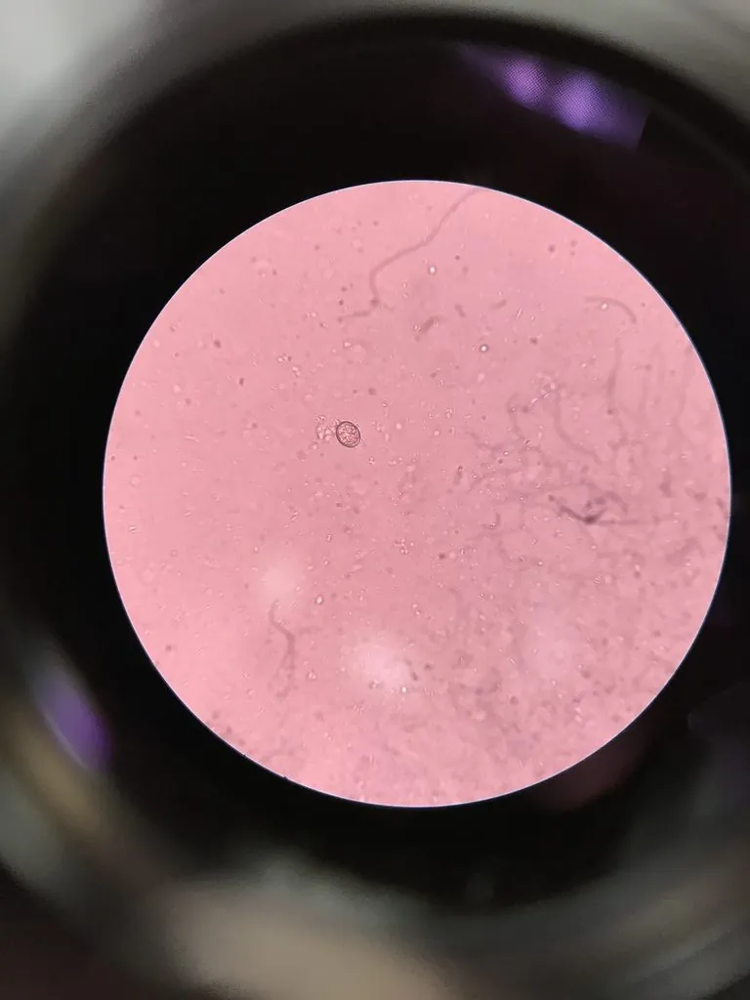

其他无脊椎动物 · 动物界
隐孢子虫 Cryptosporidium parvum

寄生于肠道上皮的球虫类原虫，卵囊极耐氯并能抗多数消毒剂，经污染饮水与动物粪便感染，引起水样腹泻。
- 分类
- 门顶复门纲孢子虫纲目隐孢子虫目科隐孢子虫科属隐孢子虫属
- 栖息环境
- 人与动物的小肠上皮细胞内，卵囊随粪便排入水体与环境
- 地理分布
- 世界性分布，奶牛场、托幼机构与游泳池常见暴发
- 保护级别
- 无保护问题；为重要水源性寄生虫，防控靠煮沸与过滤
物种志
隐孢子虫是一种细胞内寄生的原虫，生活史包括卵囊、子孢子、滋养体和裂殖体等阶段。感染性卵囊呈球形，直径约四至六微米，囊壁厚实，内含四个裸露的子孢子。卵囊对外界环境抵抗力极强，能在潮湿环境中存活数月，对常规浓度的氯、臭氧以外的多数消毒剂都不敏感。
它呈世界性分布，宿主包括人、牛、羊、犬、猫和多种野生动物。感染途径主要是粪口传播：卵囊随粪便排出，污染饮水、牛奶、蔬果或手，被吞食后在肠道上皮细胞内寄生繁殖，破坏肠绒毛，引起隐孢子虫病，表现为大量水样腹泻、腹痛、恶心和脱水，免疫功能低下者病情可迁延甚至危及生命。奶牛场、托幼机构和游泳池是常见的暴发场所。防护的关键是把水煮沸至少一分钟，使用能截留卵囊的微孔滤膜，接触动物后彻底洗手，不喝生牛奶，免疫功能低下者尤其要避免接触腹泻的幼畜。目前尚无特效药物，治疗以补液为主。
形态与习性
- 卵囊球形，直径四至六微米，囊壁厚
- 抵抗力极耐氯和多数消毒剂，可存活数月
- 感染途径粪口传播，污染饮水、牛奶、蔬果或手
- 症状大量水样腹泻、腹痛、恶心与脱水
- 高危人群免疫功能低下者可迁延甚至危及生命
- 防护水煮沸一分钟、微孔过滤、接触动物后洗手
趣味知识
- 它的卵囊只有几个微米大，常规氯消毒几乎拿它没办法。
- 喝生牛奶、接触腹泻的牛犊，都是常见的感染机会。
- 把水烧开一分钟，是最可靠的杀灭办法。